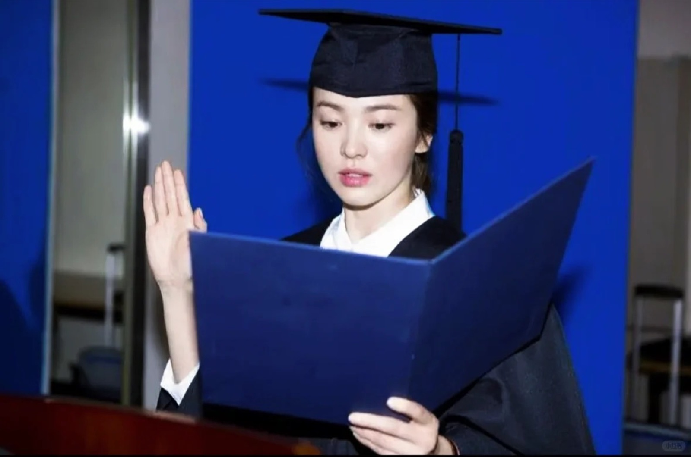

Stranger Things
Nancy Wheeler
She follows the evidence after everyone else has decided the story is over. I return to her refusal to be dismissed, and to the courage of making attention an action.
about.txt · a longer note
Not a claim to brilliance, but a record of returning: to the page, the proof, and the unfinished question.
I keep two kinds of notebooks: one for errors I can name, and one for questions I cannot yet answer. I do not place my faith in brilliance, but in returning—to the page, the proof, and the unfinished problem—until something opens.
我有两种笔记本：一本收纳能够命名的错误，一本留给尚未回答的问题。我不把希望寄托于天赋，而相信一次次回来——回到纸页、证明与未完成的问题前，直到某处慢慢打开。
I am Huiru Feng — 冯绘如, Sophia to some, Sofhrina on the internet.
I grew up in Jinan and now study Mathematics at UCL. Mathematics taught me to distrust a conclusion that arrives without its reasoning. Writing taught me that feelings deserve the same patience: name the assumption, trace the pattern, and resist the comfort of an answer that is merely quick.
I am interested in data science and artificial intelligence, but not because I want technology to make the world sound certain. I am interested in the opposite problem: how models behave when data is imperfect, categories are unstable, and confident decisions still have to be made.
I keep a taxonomy of my mathematical errors and work through them one category at a time. I keep a journal for the errors that do not fit into a spreadsheet. Both are attempts to notice before I repeat.
This website is not a polished definition of me. It is a desk left open: research drafts beside travel notes, books beside code, ambition beside the ordinary work required to carry it.
four directions
Not because I think I am them. Because each of them keeps one light on in a direction I want to recognise.
She follows the evidence after everyone else has decided the story is over. I return to her refusal to be dismissed, and to the courage of making attention an action.
She stays observant inside rooms designed to unsettle her. I return to her restraint: intelligence without theatre, empathy without surrendering judgement.
She is gentle without being easily bent, and stubborn enough to keep her own shape. I return to the strength that does not need to announce itself.

She carries expertise into uncertainty and keeps tenderness beside professional judgement. I return to a woman who can care deeply without making herself smaller.
They are not a definition, only coordinates: four ways of remaining awake to the world.